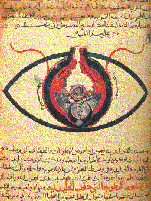
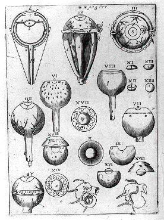

As described in the section on "Ancient Visions", the immobility of two thousand years of study of the eye might be explained by the exaggerated respect that thinkers had for the work of Galen. His extromission theory, his idea that the lens was the seat of vision, that it was at the center of the eye and not at the front, his idea that the optic nerve was hollow and bearing a "visual spirit" -- all these notions formed a system of concepts that was so convincing that middle age thinkers did not question it.
Yet two of Galen's claims: the lens at the center of the eye, and the hollow optic nerve, could surely easily have been contradicted simply by dissecting an eye. Why did this not happen? A possibility may be that the study of anatomy became a real empirical tradition only much later, with Vesalius, in the 16th Century.
In particular, up until the 16th Century, no civilisation seems to have authorized dissection of human cadavers. In ancient Egypt, embalming required removal of the viscera and might have allowed study of anatomy, but it was practised by specialist priests and not by doctors. In the Ebers papyrus there is a description of how the embalmer, after doing his work, had to submit to a purification ritual in which he was beaten and had to flee because he had mutilated a body[1].
In China, Confucius had disallowed interfering with the body. In India it was prohibited to cut flesh with a knife. Susruta, the legendary physician of the Brahman period (1000-100 BC) had consequently suggested that to study anatomy, one should let a body decompose in the running water of a river[2].
Dissection had in fact been authorized at one moment in ancient history. After Alexander the Great's death at age 32 in 323 BC, there followed a period of confusion in which the immense realm he had conquered had to be divided up. His general Ptolomy I Soter obtained the title of satrap (governor) of Egypt, and established a reign of calm by comparison with the agitation that destabilized the Greek world in the following period. The new city of Alexandria, constructed from the ground up with avenues crossing at right angles, gradually replaced Athens as the cosmopolitain center of civilisation, and during the reigns of subsequent Ptolomies, attracted thinkers from the entire mediterranean world to its medical academy and to its great library (which may have housed up to 500 000 papyruses before it was destroyed).
During this enlightened period, far from Athens and the constraints of its ancient traditions, it became possible for Herophilos (335-280 BC) in the medical academy of Alexandria to undertake hundreds of dissections on human corpses. Herophilos may even have obtained a special authorization to do vivisection on criminals. But after the death of Cleopatra in 32, and with the occupation of Greece by Rome, dissection was again discouraged.
The book written by Herophilos about the eye is unfortunately lost. Otherwise we might have known whether Herophilos[3] had correctly localized the crystalline lens just behind the pupil. Without the original work, we can only rely on secondary sources which are not clear on the issue. Rufus of Ephesus (1st and 2nd Century AD) gives a description of the eye which contains the lens, but does not indicate its exact position. Galen at certain points says the lens touches the pupil, and at others he suggests it is at the center of the eye.[4] In any case, posterity retained the version according to which the lens was at the center of the eye.

Figure from Hunayn Ibn Ishaq. Source:
http://upload.wikimedia.org/wikipedia/commons/a/a6/Cheshm_manuscript.jpg
As an example of this tendency, one can take the diagrams of the anatomy of the eye found from the 9th Century onward in Arab manuscripts -- before that time there were apparently no graphical representations made of anatomical facts. This figure from Hunayn ibn-Ishaq (AD) may be the oldest known sketch of the anatomy of the eye. The figure is taken from a manuscript dating from 1197 found in Cairo[5], made in Syria from a manuscript from 1003, which itself was a copy of Hunayn ibn-Ishaq's from about 860. Hunayn himself admits[6] that he based his drawing on Galen, and it indeed contains all the elements Galen describes. It is difficult to understand its organisation because the figure seems to mix a view from the front with a cross-sectional view. But it is fairly clear that the crystalline lens is represented at the middle of the eye, and that the optic nerve is hollow. The drawing is typical of other Arab or European drawings up until the 16th Century. Some variants from latin translations have a more geometric aspect, essentially using circular arcs, as though the authors wanted the anatomy of the eye to correspond to platonic geometric principles.[7] But in all cases there is great consistency in descriptions of the eye in the middle ages: for Hunayn Ibn Ishaq (860), Ibn Al Haytham or Alhazen (965-1038), his commentators Husain al Farisi (1316) and Witelo (c. 1220-1250), for Peckham (1240-1292) or Bacon (1214-1292), the eye was composed of a number of "tunics" which surrounded a "glacial sphere" made of transparent material like ice, supposed to be the organ of sight itself. There is ambiguity as to whether the term "glacial sphere" included all the transparent parts inside the eye, or whether it consisted only in the crystalline lens itself. But the crystalline lens itself was always considered to be situated near the center of the eyeball, whether it was taken to be of spherical shape, of flattened, lenticular shape, or like a drop. The optic nerve is always represented as being hollow. In these texts there is also the notion that a visual spirit is emitted from the ventricles of the brain and moves along the optic nerve. The retina being the only part of the eye which contains blood, it is assumed to nourish the glacial sphere, which is the seat of vision. In other words, from Galen's time up until the 16th Century, there is no notable progress in the conception of the anatomy of the eye, and the same errors are perpetuated.
It is surprising that without exception and for so long, medieval thinkers continued to support the erroneous notion that the crystalline lens is at the center of the eye. Even if dissection in humans was proscribed, animals like pigs, oxen or monkeys had been dissected by Aristotle, by Galen, and in the middle ages. In these, the crystalline lens is at the front of the eye. Why should it be differently placed in humans? It would seem that in the middle ages, thinkers paid little attention to empirical investigations and preferred to devote their energy to reading and commenting respected ancient works, like those of Aristotle and Galen. Unaware of the existence of a retinal image, unaware of the focussing action of lenses, ancient thinkers had no reason to think that the lens should be at the front of the eye. On the other hand, because sight is one of our most precious and perfect senses, and because perfection, since Plato, was often supposed to take simple geometric forms, it was natural to suppose that the lens was spherical, and that it lay at the exact center of the ocular globe, itself a sphere. The analogy with the Ptolomaic solar system is obvious.
With Galen's idea that vision occurs through the action of a spirit, half fire, half air, called 'pneuma', we can also understand that philosophers at the time supposed that the optic nerve had to be hollow in order to transport the pneuma to and from the ventricles, where lay seat of the soul.
Witelo's 'Perspectiva' (1270–78) is an important source with great influence, synthesizing extant knowledge on optics from Euclid to Bacon. It is strongly based on Alhazen's 'Optics' (de la Porta describes Witelo as "Alhazen's ape"[8]). Perspectiva was a massive book of almost 500 folio pages that was considered required reading, on equal footing with Euclid, in several universities starting from the 14th Century[9]. It was this book that Kepler chose to criticize in 1609 in his revolutionary account of vision "Paralipomena ad Vitellionem".
The appearance of an empirical approach to anatomy began progressively in the 14th Century at different european universities, like Bologna, Montpellier, Venice, and Padua. Vesalius is considered the father of anatomy because he revolutionised teaching by doing his own dissections, instead of commenting on work of an assistant, as was generally done at the time. Vesalius published several treatises whose anatomical illustrations were considerably more precise than what had been known previously. His books were extensively copied and served as reference works up to modern times. But even Vesalius did not correctly represent the position of the cristalline lens, and more or less adopted Al Hazen's diagram from five centuries earlier.
It is edifying to note that despite Vesalius's importance, he died in ignominy. He was accused of having dissected a nobleman while his heart was still beating, and had to stop his work. He departed on a pilgrimage to Jerusalem, and died in the orient.
Even as late as the 18th Century in Europe, dissection was
not a well accepted practice. It was difficult to obtain cadavers and
anatomists had to transport them in secret, often dissecting their own deceased
friends and relatives. Even today we prefer to avoid remembering that our most
precious medical knowledge comes from cutting up other people. Animal
experimentation and vivisection, though they are the foundations of medicine
and pharmacology, provoke distaste and violent debate.
The first approximately correct diagram of the eye, with the cristalline lens behind the pupil, is due to Felix Platter[10] and dates to about the same period (1600) when Kepler understood that the lens served to form an image on the retina.

Figures from Felix Platter showing the anatomy of the
eye, reprinted in Kepler's Paralipomena ad Vitellionem (1604). Note the curious
inclusion of the organs of hearing at the bottom of the figure. Kepler says he
had not asked the engraver to include these. Source:
http://en.wikipedia.org/wiki/File:Kepler_Optica.jpg
Although anatomy had not been studied per se, some anatomical knowledge about the eye should surely have been available from surgical operations, in particular those done for cataract.
Cataract is a disease of the eye in which the crystalline lens behind the pupil, which focusses light onto the retina at the back of the eye, gradually becomes obscured by an opaque haze which ultimately totally obscures vision. A technique called "couching" involved making an incision on the edge of the iris. A thin blade was used to push the lens into the inside of the eye where it would hopefully lie out of the path of light. After a few days, when the inflammation subsided, and if the lens did not resurface, the patient recovered sight -- although very blurred sight. Couching of cataracts seems to have been practised in ancient civilisations. One might have thought that the operation would require good knowledge of the anatomy of the eye, and that physicians should therefore have known that the problem came from an opacification of the lens. But it seems on the contrary that, in Egypt, physicians thought that, as the name "cataract" implies, the disease was caused by a fluid descending from the brain into the eye, forming a deposite or a membrane behind the pupil. The idea was compatible with their notion that health was determined by fluids or "breaths" or "airs" which circulated in the channels of the body. The idea was also compatible with the doctrine of the four humors (blood, phlegm, black and yellow bile) of Hippocratic medicine, and with Galen's different types of pneuma or spirits (vital, animal and natural) that perfused the body. Under this "waterfall" viewpoint of cataract, cataract operation consisted in removing the membrane that had formed behind the pupil, and not in pushing the lens into the eye. The lens was assumed to be further back, in the center of the eyeball. It could thus be that the idea that the lens was at the center of the eye was supported and consolidated every time the couching of cataracts was done, that is, frequently from the beginning of civilisation up until the middle ages.
[1]cf Papyrus book BNF
[2]Encyc. Brit.
[3]Herophilos seems to have been the first to speak of the cristalline lens, which is not mentioned by Aristotle or Hippocrates, according to Polyak, The Retina.
[4]see the description in Polyak.
[5]Meyerhof, cited by Polyak.
[6]cf Polyak, p 123
[7]Curiously, neither Polyak nor Lindberg offer an explanation of this fact. A possibility could be related to Alhazen's suggestion that all the components of the eye are of circular shape (cf Lindberg p. 68).
[8]Lindberg p. 118
[9]Lindberg p 121 gives a list of universities where starting in the 14 Century, these reading of these authors was necessary to obtain the university degree.
[10]check also Aquapendente